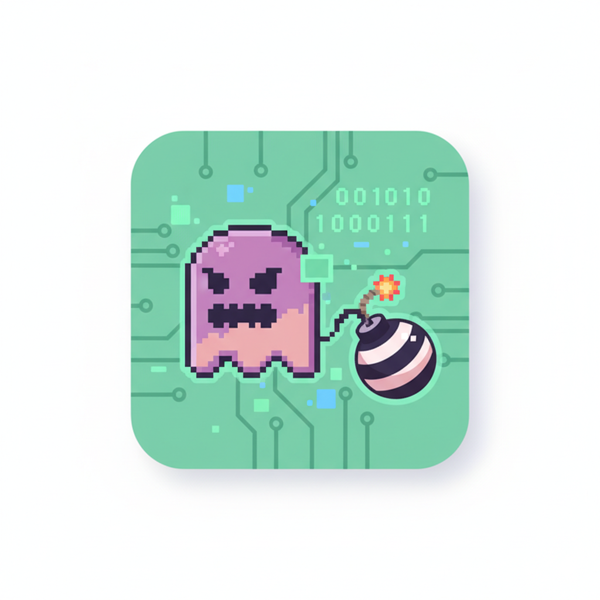
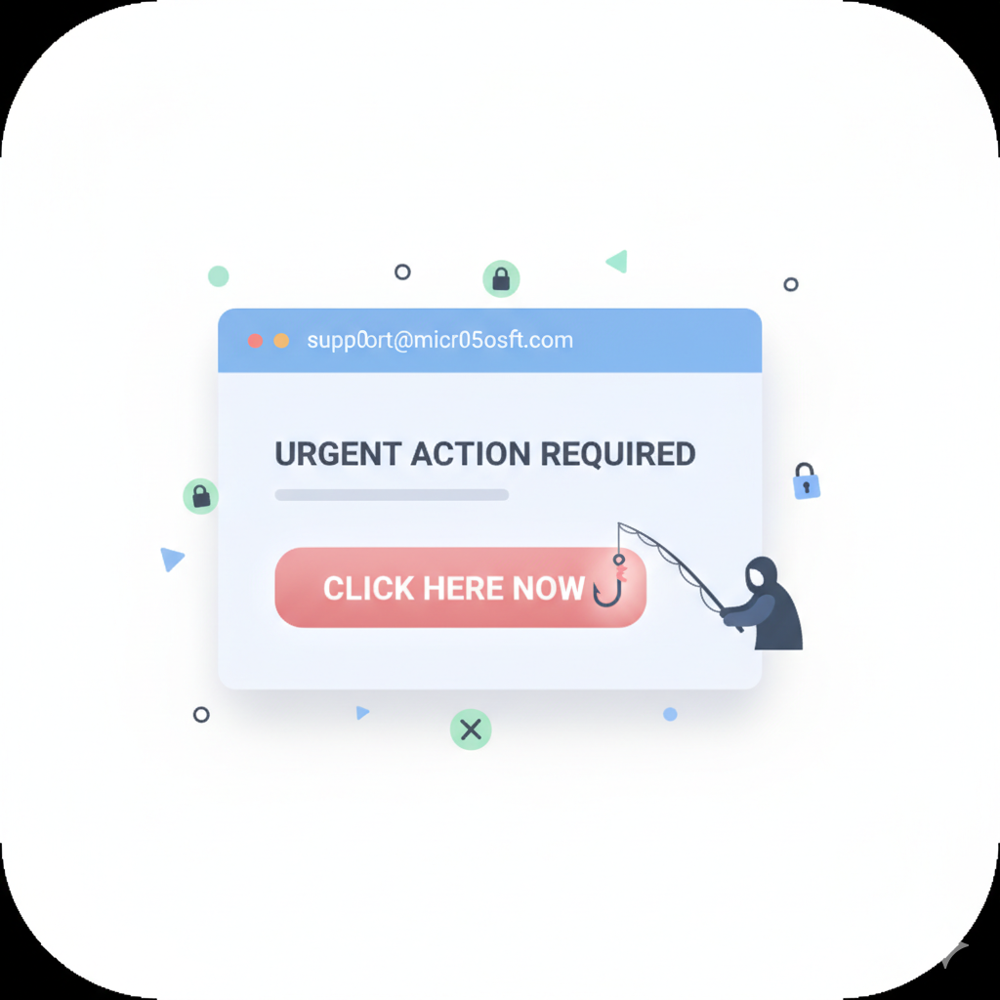
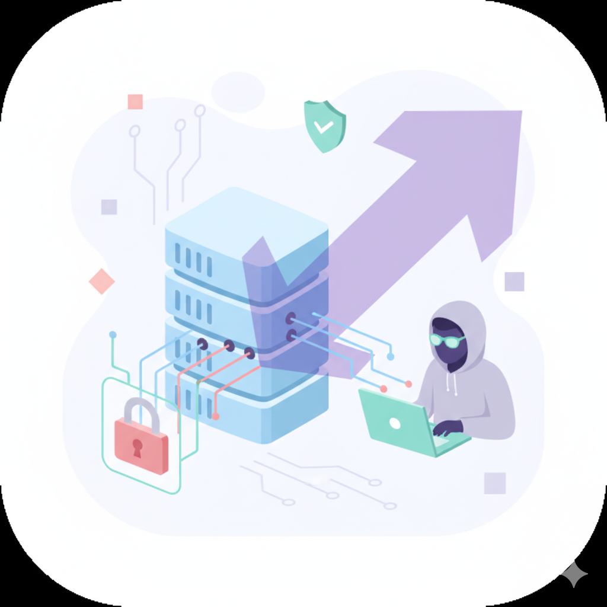
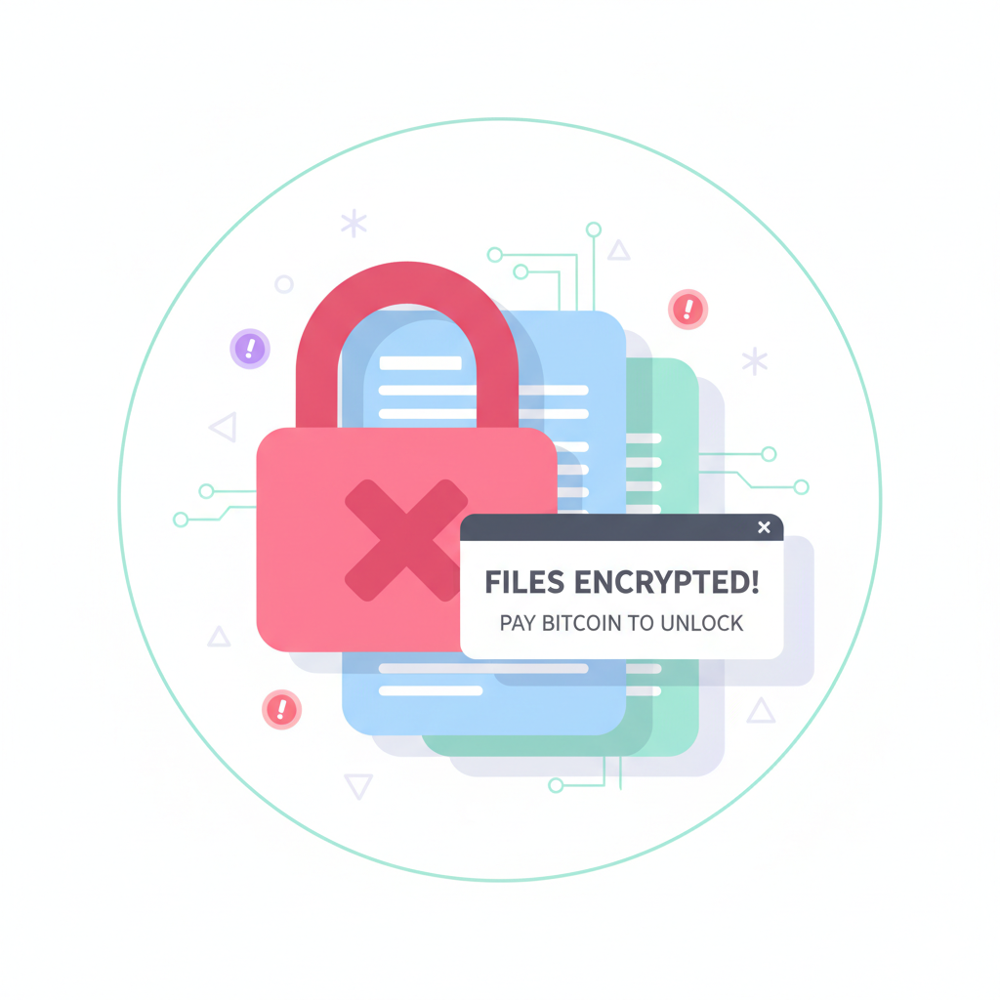

Our Story: Securing Your Digital Future
At LockX, we believe that everyone deserves to navigate the digital world with confidence and safety. We're dedicated to empowering individuals with the knowledge and tools needed to protect their online lives.
Our Mission
Our mission is to democratize cybersecurity knowledge, making complex concepts accessible and actionable for everyone. We strive to build a community where digital safety is a shared responsibility, fostering a proactive approach to online protection.
Our Vision
We envision a future where digital threats are minimized through widespread awareness and education. LockX aims to be the leading platform for cybersecurity literacy, inspiring a generation of digitally resilient citizens.
Meet the Visionary: Stephen Beulan A
LockX was founded by Stephen Beulan A, a passionate cybersecurity enthusiast from Mar Gregorios College. Stephen's journey began with a deep concern for the growing vulnerability of individuals in the digital age. Witnessing firsthand the impact of cyber threats, he embarked on a mission to create an educational platform that could empower people to protect themselves.
His vision for LockX is to bridge the gap between complex cybersecurity concepts and everyday users, making digital safety an intuitive and integral part of modern life. Stephen believes that with the right knowledge, everyone can be a guardian of their own digital privacy and security.
"Digital security isn't a luxury; it's a fundamental right. LockX is my commitment to making that right accessible to all."
Why Cybersecurity is More Important Than Ever
Rising Digital Threats
The landscape of cyber threats is constantly evolving, with new sophisticated attacks emerging daily. From phishing scams to ransomware, individuals and organizations face unprecedented risks to their data and privacy.
Personal Data Vulnerability
Our lives are increasingly online, storing vast amounts of personal data across various platforms. Protecting this data from unauthorized access, identity theft, and misuse is paramount to maintaining personal security.
The Cost of Complacency
Ignoring cybersecurity can lead to severe consequences, including financial loss, reputational damage, and emotional distress. Proactive awareness is the most effective defense against these potential harms.
Empowerment Through Knowledge
Understanding the basics of cybersecurity empowers individuals to make informed decisions, identify risks, and implement best practices that safeguard their digital well-being.
Evolution of Digital Threats
Early 2000s: The Rise of Spam & Viruses
Introduction of widespread email spam and primitive computer viruses (e.g., Melissa, I Love You virus). Focus on basic email hygiene and antivirus software.
Mid 2000s: Phishing & Social Engineering
Phishing attacks become more sophisticated, tricking users into revealing credentials. Social engineering tactics exploit human psychology rather than technical vulnerabilities.
Early 2010s: Advanced Persistent Threats (APTs)
State-sponsored or highly organized groups engage in long-term, targeted attacks to steal data. Focus shifts to deeper network security and threat intelligence.
Mid 2010s: Ransomware Epidemic
Widespread attacks where malware encrypts data and demands payment for its release (e.g., WannaCry, NotPetya). Backup strategies become critical.
Late 2010s-Present: IoT & Supply Chain Attacks
Vulnerabilities in Internet of Things devices and attacks targeting the software supply chain become prominent. Increased focus on device security and vendor trust.